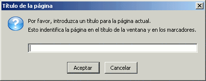
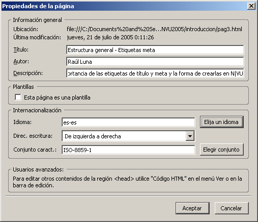

La base>>Etiquetas meta

Una vez que hemos decidido el "papel" sobre el que se mostrarán nuestras páginas vamos a completar la configuración de algunos elementos esenciales de la página.
Es probable que hayas observado que hay ocasiones en las que vemos un texto en la barra de título de la ventana del navegador. En otras ocasiones lo único que aparece es el nombre del archivo que define la página. Lo que ocurra en esa zona de la pantalla dependerá de que le hayamos dado un título a nuestra página o no lo hayamos hecho. ¿No recuerdas que cada vez que has ido a guardar por primera vez aparecía una ventana a la que probablemente no le has hecho mucho caso?
Si prestamos un poco de atención podemos ver que se nos explica con mucha claridad la utilidad del título que está solicitando.
Si ya habíamos guardado la página y
queremos hacer modificaciones podemos utilizar el
menú  e
introducir el
nuevo título en el campo correspondiente, aprovechando
incluso para completar el nombre del autor y una pequeña
descripción de la página. También
puede resultar cómodo utilizar la
visualización
e
introducir el
nuevo título en el campo correspondiente, aprovechando
incluso para completar el nombre del autor y una pequeña
descripción de la página. También
puede resultar cómodo utilizar la
visualización  y escribir el nuevo título entre las
etiquetas
y escribir el nuevo título entre las
etiquetas <title> y </title>.
 elige
para agregar alguna
etiqueta más de las
que aparecen en la ventana.
elige
para agregar alguna
etiqueta más de las
que aparecen en la ventana.
El panel al que accedemos
al pulsar nos
muestra en primer lugar un bloque dedicado a los campos principales de
información general: el título, el autor y la
descripción.
El campo descripción es esencial cuando queremos dar publicidad a nuestra página y hay que procurar darle un contenido claro y significativo, porque muchos buscadores lo utilizan como primera referencia para ofrecerle al usuario información sobre el contenido de la página.
En cuanto a los campos de internacionalización, el idioma y la dirección de escritura no son realmente etiquetas meta, sino atributos del elemento html.
Los campos que aparecen en la ventana de propiedades son invisibles para el visitante, salvo el de título. Entonces ¿para qué rellenarlos?
Su utilidad es de cara a los programas araña que lanzan los índices y motores de búsqueda para buscar direcciones de páginas. Estos programas buscan en la cabecera del documento y recogen información de las etiquetas meta, algunas de las cuales son:
<meta name="author"
content="nombre del autor de la página">No
tiene más validez que la de "firmar" la autoría.
<meta name="description"
content="la descripción del contenido">
Si no hay una etiqueta de descripción los robots suelen
utilizar las primeras palabras del texto.
<meta
name="classification" content="palabras separadas por comas">
Los índices agrupan las páginas por
categorías. Si tenemos palabras que coincidan con las
categorías del índice nuestra página
se incluirá en ese grupo.
<meta name="keywords"
content="palabras o frases separadas por comas">
Si definimos con acierto los términos por los que esperamos
que nos puedan buscar nuestros visitantes conseguiremos que los
buscadores ofrezcan el enlace a nuestra página en una
posición relevante cuando un internauta busque uno de esos
términos. La cantidad máxima de palabras clave es
de cincuenta.
<meta name="robots"
content="all"> Indica a los robots de los
buscadores que tienen que indexar todas las páginas del
sitio web.
<meta name="robots"
content="index,nofollow"> Indica a los
robots de los buscadores que tienen que indexar la página
pero no deben seguir los enlaces que pueda haber en ella.
<meta name="robots"
content="noindex,nofollow"> Indica a los
robots de los buscadores que no tienen que indexar la página
ni seguir los enlaces que pueda haber en ella.
<meta name="robots"
content="noindex,follow">
Indica a los robots de los buscadores que tienen que no tienen que
indexar la página pero que sí deben seguir los
enlaces que pueda haber en ella para indexar el resto de
páginas.
<meta HTTP-EQUIV="refresh"
content="segundos; url=http://una.nueva.direccion">
Permite redirigir de forma automática el navegador a una
determinada página al pasar el número de segundos
especificado en content. Es útil cuando se cambia una
página de dirección después de llevar
tiempo en la red, para que los que lleguen a la página
antigua a través de algún enlace puedan ir a la
nueva localización sin necesidad de tener la
dirección de ésta.
<meta
HTTP-EQUIV="Window-target" content="_top">
Hace que nuestra página se cargue automáticamente
en una ventana nueva evitando que quede encerrada en una estructura de
marcos desde la que se la haya llamado.
<meta
HTTP-EQUIV="Content-Type" CONTENT="text/html;
charset=ISO-8859-15> Indica que el
contenido del documento es un archivo html codificado con el conjunto
de caracteres propio de Europa Occidental, que incluye las vocales
acentuadas,
las eñes, el símbolo del euro, etc.
Verás que el valor por defecto para esta etiqueta
cuanto estamos trabajando en castellano es ISO-8859-1 que es
el
genérico occidental que
no incluía el símbolo del del euro.
Salvo que recurramos a una
extensión, la
única forma de insertar etiquetas meta es
haciéndolo
directamente en el código desde la pestaña